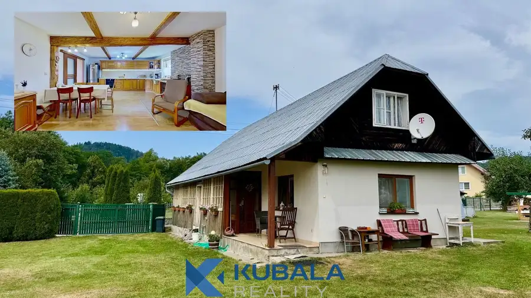
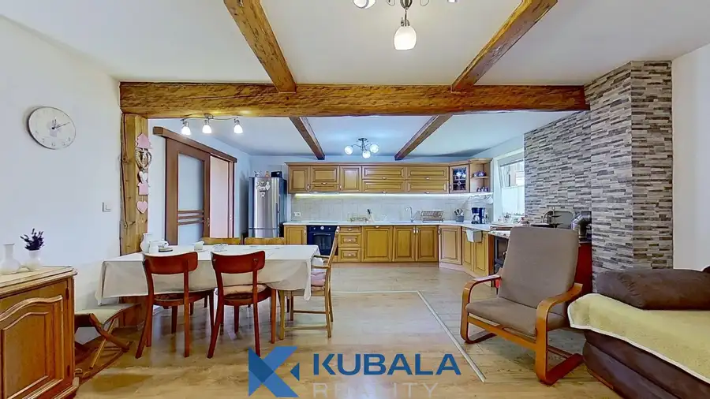
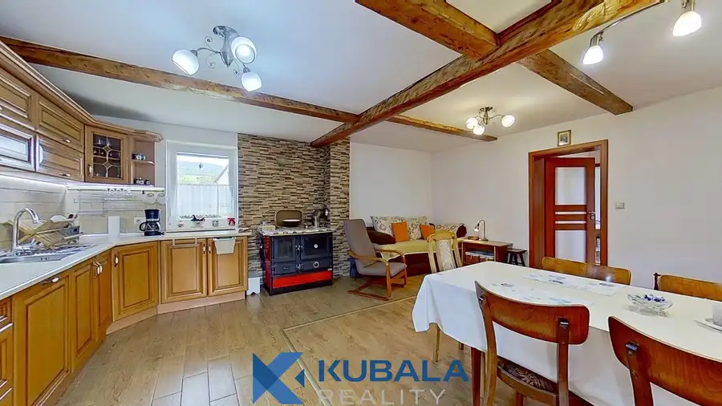
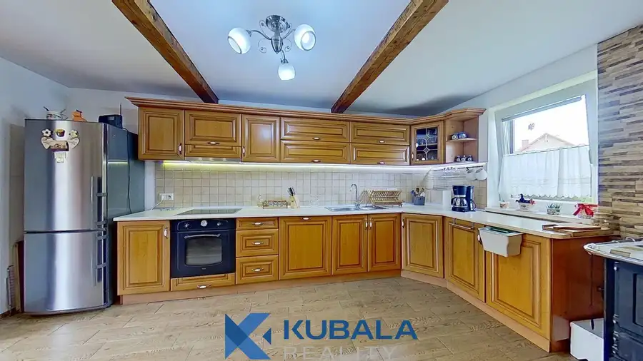
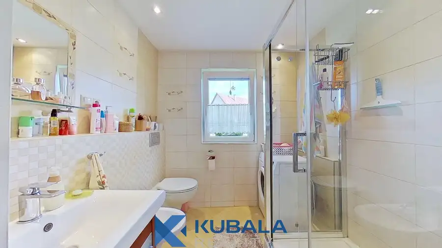
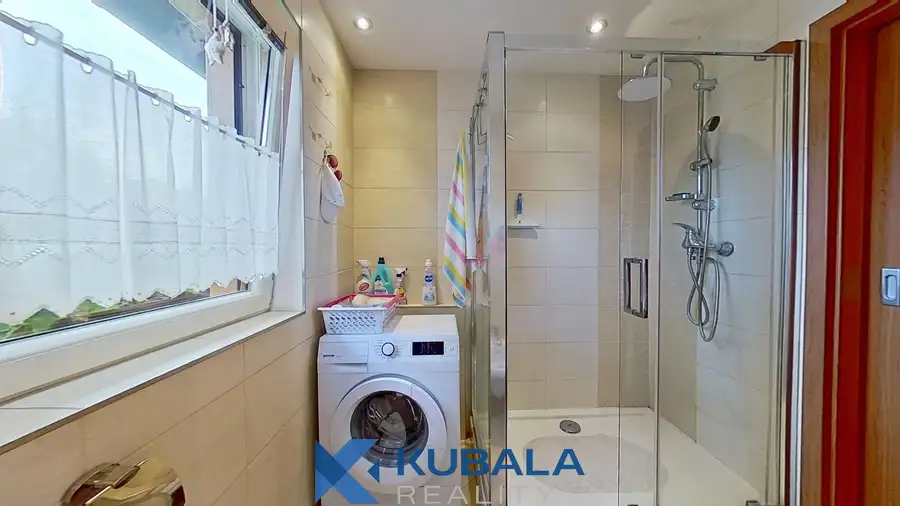
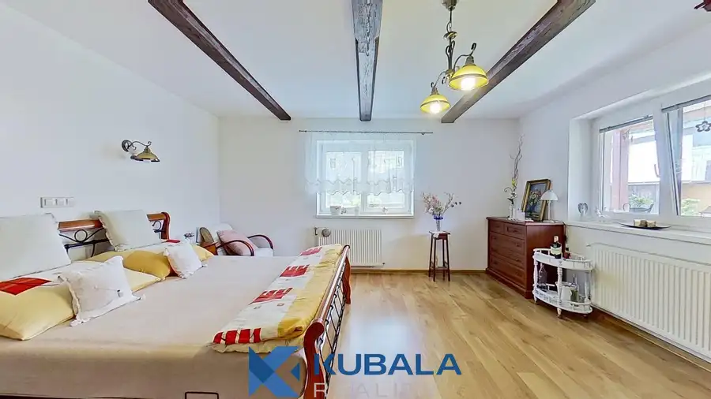
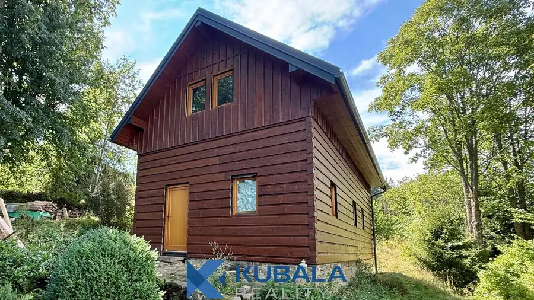
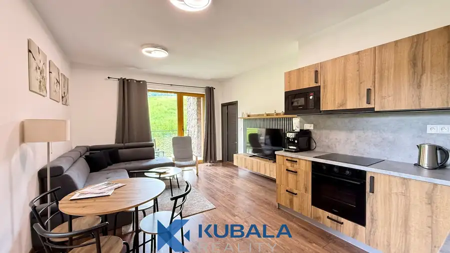
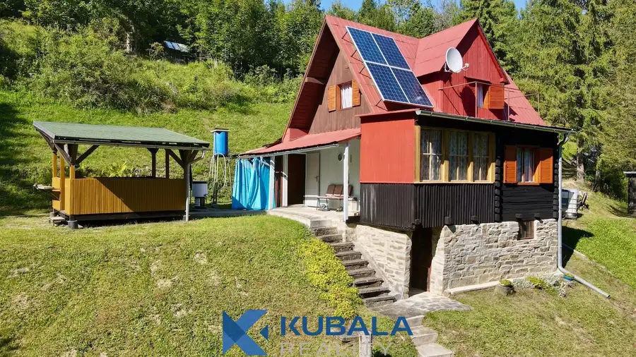

Zrekonštruovaná chalupa v Starej Bystrici
Stará Bystrica







- Plocha98 m²
- StavKompletná rekonštrukcia
- VlastníctvoOsobné
O nehnuteľnosti
Ponúkame na predaj zrekonštruovanú 98 ročnú chalupu/drevenicu v obci Stará Bystrica. Pozrite si 3D prehliadku https://my.matterport.com/show/?m=gtJsXvnymrc , fotografie exteriéru, interiéru aj okolia. Ďalšie informácie a podrobnosti nájdete nižšie v texte.LOKALITA A OKOLIE:Chalupa sa nachádza v dolnej časti obce na rovinatom pozemku s celkovou plochou 999 m2. Je celoročne bezproblémovo prístupná po asfaltovej ceste. Obec Stará Bystrica sa vyznačuje krásnou prírodou, výbornou občianskou vybavenosťou, bohatým kultúrnym programom a taktiež zrekonštruovaným centrom obce s výraznými prvkami tradičnej kysuckej ľudovej architektúry, ktorého dominantou je Slovenský orloj. Obec a jej okolie ponúka tiež bohaté možnosti na turistiku, cyklistiku, lyžovanie (Terchová – Vrátna, Oščadnica – Veľká Rača, Oravská Lesná), a iné športy. Pozoruhodný výhľad na Bystrickú dolinu sa naskytne návštevníkom rozhľadne na vrchu Bobovec. Diaľnica D3, ktorá je vo výstavbe, bude viesť 10 km od Starej Bystrice.VLASTNOSTI CHALUPY:•Drevenica postavená v roku 1928, zrekonštruovaná v rokoch 2015 až 2019.•Zastavaná plocha je 98 m2 s rozmermi 7 x 14 metrov.•Pod časťou chalupy sa nachádza pôvodná kamenná klenbová pivnica so samostatným vstupom zvonku.•Na prízemí sa nachádza priestranná denná miestnosť (kuchyňa, jedáleň a obývacia izba), chodba, kúpeľňa s WC, priestranná spálňa, chodba, veranda a vonkajšia terasa.•V podkroví je možnosť dobudovania ďalších dvoch izieb.•Strešnou krytinou je plech.TECHNICKÉ PARAMETRE A REKONŠTRUKCIE:•elektrina 230 aj 380 V,•verejný vodovod a verejná kanalizácia,•vykurovanie pecou s teplovodným zásobníkom (čerpadlo, riadiaca jednotka, záložný zdroj) napojenou na radiátory, nový murovaný komín,•plastové okná s vonkajšou povrchovou úpravou,•plávajúce podlahy a keramické dlažby,•kúpeľňa so sprchovacím kútom, WC, bidetom,•interiérové dvere s obložkovými zárubňami,•vstupné drevené bezpečnostné dvere,•kompletne nové elektroinštalácie a ističe,•TV zo satelitu, dobré pokrytie bezdrôtovým internetom,•priznané drevené nosné trámy na stropoch,•kuchynská linka so spotrebičmi – umývačka riadu, rúra na pečenie, sklokeramická varná platňa, chladnička s mrazničkou, digestor,•v pôvodnom stave zostala vonkajšia drevená priečka vo verande.VYBAVENIE, PRÍSLUŠENSTVO A DOSTUPNOSŤ:•V chalupe môže po dohode zostať väčšina súčasného zariadenia.•K chalupe patrí prístrešok na drevo so skladom na náradie a kurník.•Nehnuteľnosť je voľná ihneď po uzatvorení kúpnej zmluvy a úhrade kúpnej ceny.Kúpu tejto nehnuteľnosti je možné financovať úverom na bývanie, ktorého vybavenie Vám bezplatne sprostredkujeme, vrátane úkonov s tým spojených (znalecký posudok, kataster a pod.). V réžii realitnej kancelárie je zabezpečenie kompletnej zmluvnej dokumentácie, asistencia pri odovzdaní nehnuteľnosti, prepise služieb a energií na nového vlastníka, poplatok za štandardné podanie na kataster, overenie podpisov a potrebné administratívne kroky spojené s predajom. Ak máte záujem o viac informácií alebo si prajete dohodnúť osobnú obhliadku nehnuteľnosti, neváhajte nás kontaktovať!Mgr. Róbert Kubala, RSc.KUBALA REALITY, s.r.o.Palárikova 2845/26A, 022 01 Čadcatel.: +421 907 336 493email: robert@kubalareality.sk
Parametre
- Bezpečnosť
- Bezpečnostné dvere
- Doprava
- Diaľkový autobus, Cyklistická infraštruktúra
- Druh
- Chalupa, rekreačný domček
- Dátum zverejnenia
- 12. 08. 2026
- Energetická náročnosť
- Z klasických materiálov
- Energetický certifikát budovy
- nie je
- Orientácia
- Juhozápadná
- Plocha pozemku
- 999 m²
- Počet izieb / miestností
- 2
- Počet kúpeľní
- 1
- Počet nadzemných podlaží
- 1
- Počet pivníc
- 1
- Počet spální
- 1
- Príprava teplej vody
- El. akumulačný boiler
- Prístupová komunikácia
- Asfaltová
- Rok poslednej rekonštrukcie
- 2019
- Rok výstavby
- 1928
- Stav nehnuteľnosti
- Kompletná rekonštrukcia
- Telekomunikácie
- Satelit
- Terás
- 1
- Terén pozemku
- Rovinatý
- Typ
- Predaj
- Typ konštrukcie
- Drevená
- Vlastníctvo
- Osobné
- Vybavenie
- Terasa, Pivnica, Záhrada
- Vykurovanie
- Ústredné
- Zastavaná plocha
- 98 m²
- Zdroj tepla
- Uhlie alebo drevo
- Úžitková plocha
- 98 m²
Kde to je


Mohlo by Vás zaujímať

Chata, drevenica, zrubNové 120 000 €Chata v krásnom prostredí Horných Kysúc Olešná 100 m²
BytNové 209 000 €Na predaj zariadený apartmán v Oravskej Lesnej Oravská Lesná 43 m²2. podlažie
Chata, drevenica, zrubNové 69 000 €Na predaj chata v krásnom prostredí, Nová Bystrica Nová Bystrica 90 m²